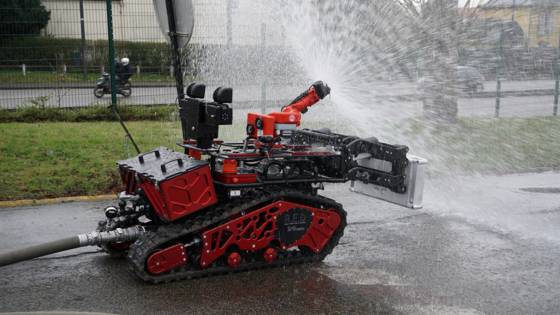

Ce robot est un version miniature d'un robot capable d'aider les acteurs de la sécurité civil tels que les pompiers ou la gendarmerie lors par exemple de glissements de terrains. Il apporte aussi une meilleure vision du futur, en effet, les robots prennent déjà part à certaines missions comme le robot "Colossus" de la BSPP qui a nottament servi pour l'incendie de Notre-Dame.
Le robot n'est pas connecté il n'y a donc aucun risque pour la sécurité de ses données.